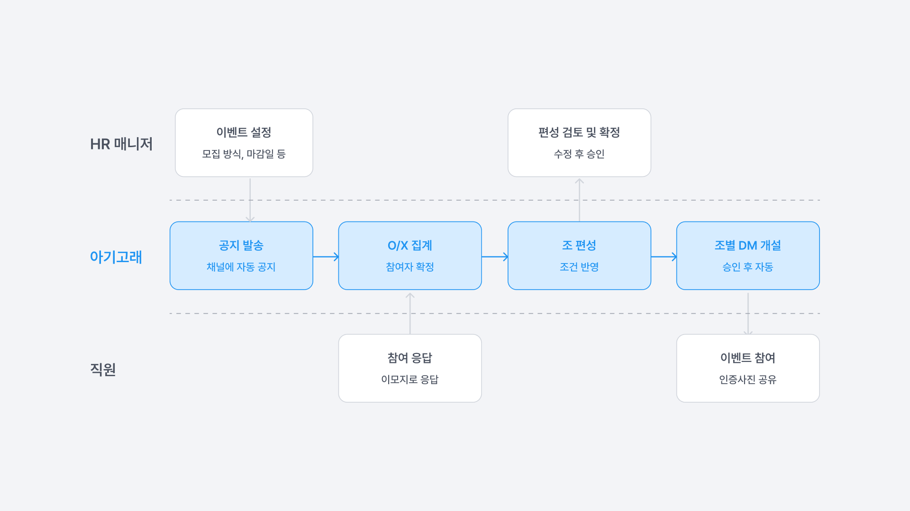
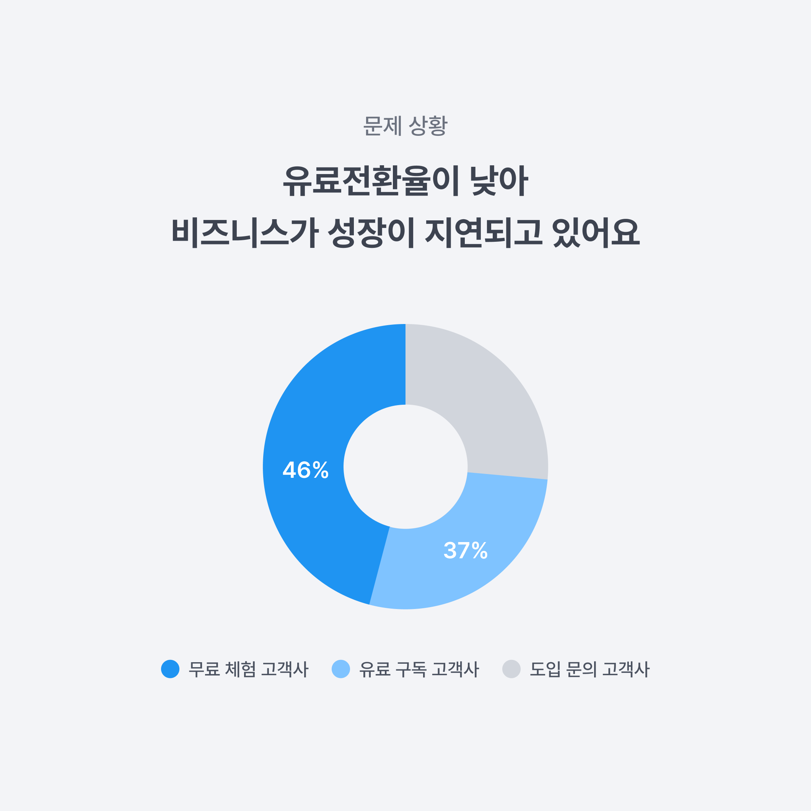
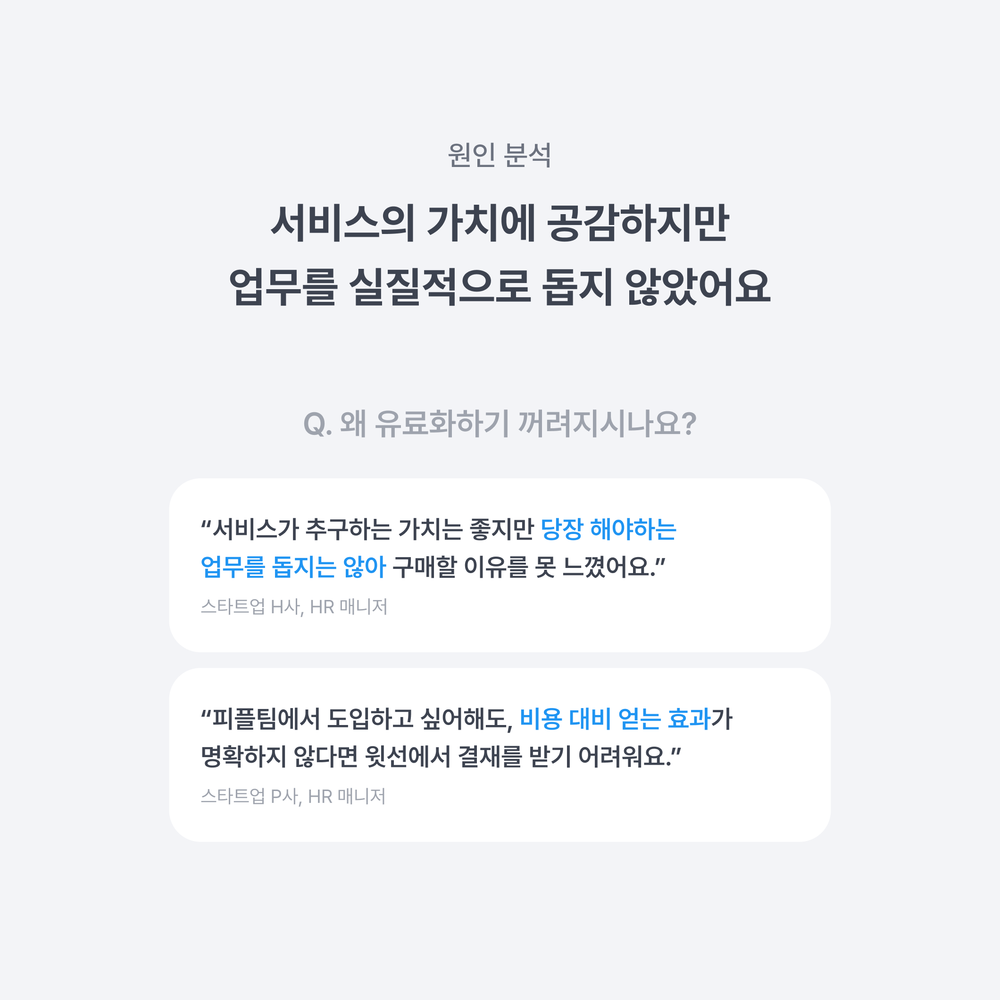

저조한 유료전환을 업무 효율화 기능 출시로 풀어 매출을 올리는 것이 목표였습니다
HR SaaS 슬랙앱 '아기고래'는 무료체험 고객사 비중이 46%, 유료 구독 고객사가 37%였습니다. 전 고객사 리서치에서는 "서비스 가치는 좋지만 당장 해야 하는 업무를 돕지는 않아 구매할 이유를 못 느꼈다"는 반응이 나왔습니다.



| 레이어 | 지표 | 목표 |
|---|---|---|
| Input | 무료체험 고객사 유료전환율 | 50% 이상 |
| Output | MRR(월간 반복 매출) | 10% 이상 상승 |